tsk_penguins = tsk("penguins")
splits = partition(tsk_penguins)
lrn_rpart = lrn("classif.rpart")
lrn_rpart$train(tsk_penguins, splits$train)
prediction = lrn_rpart$predict(tsk_penguins, splits$test)3 Evaluation and Benchmarking
Giuseppe Casalicchio
Ludwig-Maximilians-Universität München, and Munich Center for Machine Learning (MCML), and Essential Data Science Training GmbH
Lukas Burk
Ludwig-Maximilians-Universität München, and Leibniz Institute for Prevention Research and Epidemiology - BIPS, and Munich Center for Machine Learning (MCML)
Sebastian Fischer
Ludwig-Maximilians-Universität München, and Munich Center for Machine Learning (MCML)
A supervised machine learning model can only be deployed in practice if it has a good generalization performance, which means it generalizes well to new, unseen data. Accurate estimation of the generalization performance is crucial for many aspects of machine learning application and research – whether we want to fairly compare a novel algorithm with established ones or to find the best algorithm for a particular task. The concept of performance estimation provides information on how well a model will generalize to new data and plays an important role in the context of model comparison (Section 3.3), model selection, and hyperparameter tuning (Chapter 4).
Generalization Performance
Assessing the generalization performance of a model begins with selecting a performance measure that is appropriate for our given task and evaluation goal. As we have seen in Section 2.3, performance measures typically compute a numeric score indicating how well the model predictions match the ground truth (though some technical measures were seen in Section 2.3.3). Once we have decided on a performance measure, the next step is to adopt a strategy that defines how to use the available data to estimate the generalization performance. Using the same data to train and test a model is a bad strategy as it would lead to an overly optimistic performance estimate. For example, a model that is overfitted (fit too closely to the data) could make perfect predictions on training data simply by memorizing it and then only make random guesses for new data. In Section 2.2.1.1 we introduced partition(), which splits a dataset into training data – data for training the model – and test data – data for testing the model and estimating the generalization performance, this is known as the holdout strategy (Section 3.1) and is where we will begin this chapter. We will then consider more advanced strategies for assessing the generalization performance (Section 3.2), look at robust methods for comparing models (Section 3.3), and finally will discuss specialized performance measures for binary classification (Section 3.4). For an in-depth overview of measures and performance estimation, we recommend Japkowicz and Shah (2011).
Resampling Does Not Avoid Model Overfitting
A common misunderstanding is that holdout and other more advanced resampling strategies can prevent model overfitting. In fact, these methods just make overfitting visible as we can separately evaluate train/test performance. Resampling strategies also allow us to make (nearly) unbiased estimations of the generalization error.
3.1 Holdout and Scoring
An important goal of ML is to learn a model that can then be used to make predictions about new data. For this model to be as accurate as possible, we would ideally train it on as much data as is available. However, data is limited and as we have discussed we cannot train and test a model on the same data. In practice, one would usually create an intermediate model, which is trained on a subset of the available data and then tested on the remainder of the data. The performance of this intermediate model, obtained by comparing the model predictions to the ground truth, is an estimate of the generalization performance of the final model, which is the model fitted on all data.
Intermediate Model
The holdout strategy is a simple method to create this split between training and testing datasets, whereby the original data is split into two datasets using a defined ratio. Ideally, the training dataset should be as large as possible so the intermediate model represents the final model as well possible. If the training data is too small, the intermediate model is unlikely to perform as well as the final model, resulting in a pessimistically biased performance estimate. On the other hand, if the training data is too large, then we will not have a reliable estimate of the generalization performance due to high variance resulting from small test data. As a rule of thumb, it is common to use 2/3 of the data for training and 1/3 for testing as this provides a reasonable trade-off between bias and variance of the generalization performance estimate (Kohavi 1995; Dobbin and Simon 2011).
Holdout
In Chapter 2, we used partition() to apply the holdout method to a Task object. To recap, let us split tsk("penguins") with a 2/3 holdout (default split):
We can now estimate the generalization performance of a final model by evaluating the quality of the predictions from our intermediate model. As we have seen in Section 2.3, this is simply a case of choosing one or more measures and passing them to the $score() function. So to estimate the accuracy of our final model we would pass the accuracy measure to our intermediate model:
prediction$score(msr("classif.acc"))classif.acc
0.9386
Permuting Observations for Performance Estimation
When splitting data it is essential to permute observations before, to remove any information that is encoded in data ordering. The order of data is often informative in real-world datasets, for example hospital data will likely be ordered by time of patient admission. In tsk("penguins"), the data is ordered such that the first 152 rows all have the label ‘Adelie’, the next 68 have the label ‘Chinstrap’, and the final 124 have the label ‘Gentoo’; so if we did not permute the data we could end up with a model that is only trained on one or two species.
partition() and all resampling strategies discussed below automatically randomly split the data to prevent any biases (so do not forget to set a seed for reproducibility). Data within each set may still be ordered because of implementation details, but this is not a problem as long as the data is shuffled between sets.
Many performance measures are based on ‘decomposable’ losses, which means they compute the differences between the predicted values and ground truth values first on an observation level and then aggregate the individual loss values over the test set into a single numeric score. For example, the classification accuracy compares whether the predicted values from the response column have the same value as the ground truth values from the truth column of the Prediction object. Hence, for each observation, the decomposable loss takes either value 1 (if response and truth have the same value) or 0 otherwise. The $score() method summarizes these individual loss values into a an average value – the percentage where our prediction was correct. Other performance measures that are not decomposable instead act on a set of observations, we will return to this in detail when we look at the AUC measure in Section 3.4. Figure 3.1 illustrates the input-output behavior of the $score() method, we will return to this when we turn to more complex evaluation strategies.
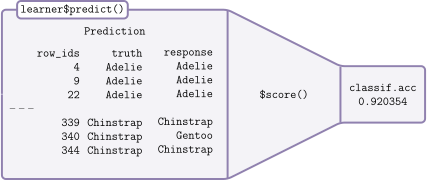
$score() method which aggregates predictions of multiple observations contained in a prediction object into a single numeric score
3.2 Resampling
Resampling strategies repeatedly split all available data into multiple training and test sets, with one repetition corresponding to what is called a ‘resampling iteration’ in mlr3. An intermediate model is then trained on each training set and the test set is used to measure the performance in each resampling iteration. The generalization performance is finally estimated by aggregating the performance scores over multiple resampling iterations (Figure 3.2). By repeating the data splitting process, data points are repeatedly used for both training and testing, allowing more efficient use of all available data for performance estimation. Furthermore, a high number of resampling iterations can reduce the variance in our scores and thus result in a more reliable performance estimate. This means that the performance estimate is less likely to be affected by an ‘unlucky’ split (e.g., a split that does not reflect the original data distribution).
![A flowchart-like diagram with 3 overlapping boxes. Left box has the caption 'Data splitting / resampling process', upper right box has caption 'Learning process', and lower right box has caption 'Evaluation process'. The process starts in the left box with 'Data' and an arrow to 'Resampling Strategy', which separates into two elements stacked vertically: 'Train Set(s)' above and 'Test Set(s)' below. The 'Train set(s)' element leads to a 'Learner' box, which is inside the larger 'Learning Process' box. A box that says 'Hyperparameters' also sits within the 'Learning Process' and is connected with an arrow also pointing to 'Learner'. An arrow points from the 'Learner' to a stack of 'Intermediate Model(s)'. One thick arrow goes down into the yellow box to a stack of 'Prediction(s)'. An arrow goes from there to 'Performance measure'. The 'Test set(s)' from earlier also have an arrow to 'Performance measure'. From there, a thick arrow goes to 'Performance Value(s)', which has a final dashed arrow to 'Aggregated Performance'.](Figures/mlr3book_figures-4.svg)
A variety of resampling strategies exist, each with its advantages and disadvantages, which depend on the number of available samples, the task complexity, and the type of model.
A very common strategy is k-fold cross-validation (CV), which randomly partitions the data into \(k\) non-overlapping subsets, called folds (Figure 3.3). The \(k\) models are always trained on \(k-1\) of the folds, with the remaining fold being used as test data; this process is repeated until each fold has acted exactly once as test set. Finally, the \(k\) performance estimates from each fold are aggregated, usually by averaging. CV guarantees that each observation will be used exactly once in a test set, making efficient use of the available data for performance estimation. Common values for \(k\) are 5 and 10, meaning each training set will consist of 4/5 or 9/10 of the original data, respectively. Several variations of CV exist, including repeated k-fold cross-validation where the k-fold process is repeated multiple times, and leave-one-out cross-validation (LOO-CV) where the number of folds is equal to the number of observations, leading to the test set in each fold consisting of only one observation.
Cross-validation
Subsampling and bootstrapping are two related resampling strategies. Subsampling randomly selects a given ratio (4/5 and 9/10 are common) of the data for the training dataset where each observation in the dataset is drawn without replacement from the original dataset. The model is trained on this data and then tested on the remaining data, and this process is repeated \(k\) times. This differs from k-fold CV as the subsets of test data may be overlapping. Bootstrapping follows the same process as subsampling but data is drawn with replacement from the original dataset. Usually the number of bootstrap samples equals the size of the original dataset. This means an observation could be selected multiple times (and thus duplicated) in the training data (but never more than once per test dataset). On average, \(1 - e^{-1} \approx 63.2\%\) of the data points will be contained in the training set during bootstrapping, referred to as “in-bag” samples (the other 36.8% are known as “out-of-bag” samples).
Subsampling
Note that terminology regarding resampling strategies is not consistent across the literature, for example, subsampling is sometimes referred to as “repeated holdout” or “Monte Carlo cross-validation”.
The choice of the resampling strategy usually depends on the specific task at hand and the goals of the performance assessment, but some rules of thumb are available. If the available data is fairly small (\(N \leq 500\)), repeated cross-validation with a large number of repetitions can be used to keep the variance of the performance estimates low (10 folds and 10 repetitions is a good place to start). Traditionally, LOO-CV has also been recommended for these small sample size regimes, but this estimation scheme is quite expensive (except in special cases where computational shortcuts exist) and (counterintuitively) suffers from quite high variance. Furthermore, LOO-CV is also problematic in imbalanced binary classification tasks as concepts such as stratification (Section 3.2.6) cannot be applied. For the \(500 \leq N \leq 50000\) range, 5- to 10-fold CV is generally recommended. In general, the larger the dataset, the fewer splits are required, yet sample-size issues can still occur, e.g., due to imbalanced data. For settings where one is more interested in proper inference (such as through statistical performance tests or confidence intervals) than bare point estimators of performance, bootstrapping and subsampling are often considered, usually with a higher number of iterations. Bootstrapping has become less common, as having repeated observations in training data can lead to problems in some machine learning setups, especially when combined with model selection methods and nested resampling (as duplicated observations can then end up simultaneously in training and test sets in nested schemes). Also note that in all of these common and simple schemes, resampling performance estimates are not independent, as models are fitted on overlapping training data, making proper inference less than trivial, but a proper treatment of these issues is out of scope for us here. For further details and critical discussion we refer to the literature, e.g., Molinaro, Simon, and Pfeiffer (2005), Kim (2009), and Bischl et al. (2012).
![Complex flow chart in roughly three rows. Top row (Iteration 1) shows Dtrain split into two light blue boxes representing training data and pointing to a 'Learner', which points to a 'Model'. A dark blue box representing test data points to the same 'Model' as well as 'Measure'. 'Model' points to 'Prediction' which also points to 'Measure', which then points to 'Performance', which has an arrow to 'Averaged Performance'. In rows two and three the same process is inferred except with different boxes in dark and light blue so that each box has been dark blue exactly once across all three iterations.](Figures/mlr3book_figures-6.svg)
In the rest of this section, we will go through querying and constructing resampling strategies in mlr3, instantiating train-test splits, and then performing resampling on learners.
3.2.1 Constructing a Resampling Strategy
All implemented resampling strategies are stored in the mlr_resamplings dictionary.
as.data.table(mlr_resamplings) key label
1: bootstrap Bootstrap
2: custom Custom Splits
3: custom_cv Custom Split Cross-Validation
4: cv Cross-Validation
5: holdout Holdout
6: insample Insample Resampling
7: loo Leave-One-Out
8: ncv Nested CV
9: paired_subsampling Paired Subsampling
10: repeated_cv Repeated Cross-Validation
11: subsampling Subsampling
2 variables not shown: [params, iters]The params column shows the parameters of each resampling strategy (e.g., the train-test splitting ratio or the number of repeats) and iters displays the number of performed resampling iterations by default.
Resampling objects can be constructed by passing the strategy ‘key’ to the sugar function rsmp(). For example, to construct the holdout strategy with a 4/5 split (2/3 by default):
Resamplingrsmp()rsmp("holdout", ratio = 0.8)
── <ResamplingHoldout> : Holdout ────────────────────────────────────────
• Iterations: 1
• Instantiated: FALSE
• Parameters: ratio=0.8Parameters for objects inheriting from Resampling work in the same way as measures and learners and can be set, retrieved, and updated accordingly:
# three-fold CV
cv3 = rsmp("cv", folds = 3)
# Subsampling with 3 repeats and 9/10 ratio
ss390 = rsmp("subsampling", repeats = 3, ratio = 0.9)
# 2-repeats 5-fold CV
rcv25 = rsmp("repeated_cv", repeats = 2, folds = 5)When a "Resampling" object is constructed, it is simply a definition for how the data splitting process will be performed on the task when running the resampling strategy. However, it is possible to manually instantiate a resampling strategy, i.e., generate all train-test splits, by calling the $instantiate() method on a given task. So carrying on our tsk("penguins") example we can instantiate the three-fold CV object and then view the row indices of the data selected for training and testing each fold using $train_set() and $test_set() respectively:
$instantiate()cv3$instantiate(tsk_penguins)
# first 5 observations in first training set
cv3$train_set(1)[1:5][1] 1 4 5 8 16# first 5 observations in third test set
cv3$test_set(3)[1:5][1] 2 6 10 13 19When the aim is to fairly compare multiple learners, best practice dictates that all learners being compared use the same training data to build a model and that they use the same test data to evaluate the model performance. Resampling strategies are instantiated automatically for you when using the resample() method, which we will discuss next. Therefore, manually instantiating resampling strategies is rarely required but might be useful for debugging or digging deeper into a model’s performance.
3.2.2 Resampling Experiments
The resample() function takes a given Task, Learner, and Resampling object to run the given resampling strategy. resample() repeatedly fits a model on training sets, makes predictions on the corresponding test sets and stores them in a ResampleResult object, which contains all the information needed to estimate the generalization performance.
resample()ResampleResultrr = resample(tsk_penguins, lrn_rpart, cv3)
rr
── <ResampleResult> with 3 resampling iterations ────────────────────────
task_id learner_id resampling_id iteration prediction_test
penguins classif.rpart cv 1 <PredictionClassif>
penguins classif.rpart cv 2 <PredictionClassif>
penguins classif.rpart cv 3 <PredictionClassif>
2 variables not shown: [warnings, errors]Each row of the output corresponds to one of the three iterations/folds. As with Prediction objects, we can calculate the score for each iteration with $score():
acc = rr$score(msr("classif.ce"))
acc[, .(iteration, classif.ce)] iteration classif.ce
1: 1 0.06087
2: 2 0.05217
3: 3 0.07018
Evaluating Train Sets
By default, $score() evaluates the performance in the test sets in each iteration, however, you could evaluate the train set performance, see ?sec-valid-tuning.
While $score() returns the performance in each evaluation, $aggregate(), returns the aggregated score across all resampling iterations.
$aggregate()
rr$aggregate(msr("classif.ce"))classif.ce
0.06107 By default, the majority of measures will aggregate scores using a macro average, which first calculates the measure in each resampling iteration separately, and then averages these scores across all iterations. However, it is also possible to aggregate scores using a micro average, which pools predictions across resampling iterations into one Prediction object and then computes the measure on this directly:
rr$aggregate(msr("classif.ce", average = "micro"))classif.ce
0.06105 We can see a small difference between the two methods. Classification error is a decomposable loss (Section 3.1), in fact, if the test sets all had the same size then the micro and macro methods would be identical (see box below). For errors like AUC, which are defined across the set of observations, the difference between micro- and macro-averaging will be larger. The default type of aggregation method can be found by querying the $average field of a Measure object.
Macro- and Micro-Averaging
As a simple example to explain macro- and micro-averaging, consider the difference between taking the mean of a vector (micro) compared to the mean of two group-wise means (macro):
In the example shown in the main text where we used tsk("penguins"), there is a difference in the classification error between micro and macro methods because the dataset has 344 rows, which is not divisible by three (the number of folds), hence the test sets are not of an equal size.
Note that the terms “macro-averaging” and “micro-averaging” are not used consistently in the literature, and sometimes refer to different concepts, e.g., the way in which the performance is aggregated across classes in a multi-class classification task.
The aggregated score returned by $aggregate() estimates the generalization performance of our selected learner on the given task using the resampling strategy defined in the Resampling object. While we are usually interested in this aggregated score, it can be useful to look at the individual performance values of each resampling iteration (as returned by the $score() method) as well, e.g., to see if any of the iterations lead to very different performance results. Figure 3.4 visualizes the relationship between $score() and $aggregate() for a small example based on the "penguins" task.
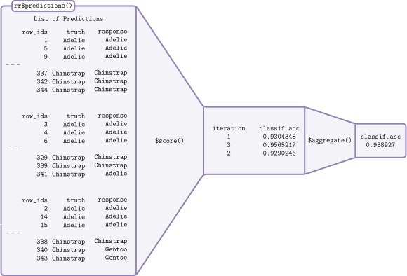
$score() and $aggregate(): The former aggregates predictions to a single score within each resampling iteration, and the latter aggregates scores across all resampling iterations.
To visualize the resampling results, you can use the autoplot.ResampleResult() function to plot scores across folds as boxplots or histograms (Figure 3.5). Histograms can be useful to visually gauge the variance of the performance results across resampling iterations, whereas boxplots are often used when multiple learners are compared side-by-side (see Section 3.3).
rr = resample(tsk_penguins, lrn_rpart, rsmp("cv", folds = 10))
autoplot(rr, measure = msr("classif.acc"), type = "boxplot")
autoplot(rr, measure = msr("classif.acc"), type = "histogram")
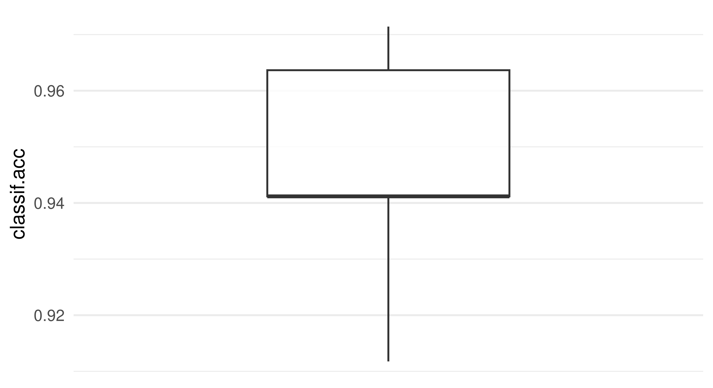
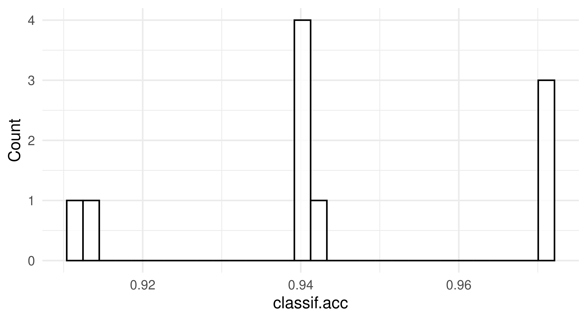
3.2.3 Confidence Intervals (+)
Instead of relying solely on point estimates, CIs offer a measure of uncertainty of this estimate, allowing us to understand the reliability of our performance measurement. While constructing CIs for the generalization error is challenging due to the complex nature of the inference problem, some methods have been shown to work well in practice (Schulz-Kümpel et al. 2024). When employing such methods, it is important to be aware that they can fail in some cases – e.g. in the presence of outliers or instable learning procedures – and to be aware that the resulting CIs can either be too conservative or too liberal.
The mlr3inferr package extends the mlr3 ecosystem with both inference methods and new resampling strategies. The inference methods are implemented as Measure objects that take in another measure for which to compute the CI. Below, we demonstrate how to use the inference method suggested by Bayle et al. (2020) to compute a CI for the cross-validation result from the previous section. As opposed to other mlr3 measures, the result is not a scalar value, but a vector containing the point estimate, as well as the lower and upper bounds of the CI for the specified alpha level.
library(mlr3inferr)
# alpha = 0.05 is also the default
msr_ci = msr("ci.wald_cv", msr("classif.acc"), alpha = 0.05)
rr$aggregate(msr_ci) classif.acc classif.acc.lower classif.acc.upper
0.9448 0.9206 0.9689 We can also use msr("ci"), which will automatically select the appropriate inference measure for the given resampling strategy. A list of available inference methods can be found on the package website: https://mlr3inferr.mlr-org.com/.
3.2.4 ResampleResult Objects
As well as being useful for estimating the generalization performance, the ResampleResult object can also be used for model inspection. We can use the $predictions() method to obtain a list of Prediction objects corresponding to the predictions from each resampling iteration. This can be used to analyze the predictions of individual intermediate models from each resampling iteration. To understand the class better, we use it here to manually compute a macro averaged performance estimate.
# list of prediction objects
rrp = rr$predictions()
# print first two
rrp[1:2][[1]]
── <PredictionClassif> for 35 observations: ─────────────────────────────
row_ids truth response
20 Adelie Chinstrap
21 Adelie Adelie
33 Adelie Adelie
--- --- ---
307 Chinstrap Adelie
322 Chinstrap Chinstrap
333 Chinstrap Chinstrap
[[2]]
── <PredictionClassif> for 35 observations: ─────────────────────────────
row_ids truth response
8 Adelie Adelie
41 Adelie Adelie
44 Adelie Chinstrap
--- --- ---
309 Chinstrap Adelie
312 Chinstrap Chinstrap
331 Chinstrap Adelie[1] 0.05529The $prediction() method can be used to extract a single Prediction object that combines the predictions of each intermediate model across all resampling iterations. The combined prediction object can, for example, be used to manually compute a micro-averaged performance estimate (see Section 3.2.2 for how to you can micro-average more conveniently).
prediction = rr$prediction()
prediction
── <PredictionClassif> for 344 observations: ────────────────────────────
row_ids truth response
20 Adelie Chinstrap
21 Adelie Adelie
33 Adelie Adelie
--- --- ---
330 Chinstrap Chinstrap
337 Chinstrap Gentoo
340 Chinstrap Gentooprediction$score()classif.ce
0.05523 By default, the intermediate models produced at each resampling iteration are discarded after the prediction step to reduce memory consumption of the ResampleResult object (only the predictions are required to calculate most performance measures). However, it can sometimes be useful to inspect, compare, or extract information from these intermediate models. We can configure the resample() function to keep the fitted intermediate models by setting store_models = TRUE. Each model trained in a specific resampling iteration can then be accessed via $learners[[i]]$model, where i refers to the i-th resampling iteration:
rr = resample(tsk_penguins, lrn_rpart, cv3, store_models = TRUE)
# get the model from the first iteration
rr$learners[[1]]$modeln= 229
node), split, n, loss, yval, (yprob)
* denotes terminal node
1) root 229 122 Adelie (0.46725 0.18777 0.34498)
2) bill_length< 42.35 98 0 Adelie (1.00000 0.00000 0.00000) *
3) bill_length>=42.35 131 52 Gentoo (0.06870 0.32824 0.60305)
6) island=Dream,Torgersen 50 7 Chinstrap (0.14000 0.86000 0.00000)
12) island=Torgersen 7 0 Adelie (1.00000 0.00000 0.00000) *
13) island=Dream 43 0 Chinstrap (0.00000 1.00000 0.00000) *
7) island=Biscoe 81 2 Gentoo (0.02469 0.00000 0.97531) *In this example, we could then inspect the most important variables in each iteration to help us learn more about the respective fitted models:
# print 2nd and 3rd iteration
lapply(rr$learners[2:3], function(x) x$model$variable.importance)[[1]]
bill_length flipper_length bill_depth body_mass
84.81 80.59 67.52 57.39
island
49.11
[[2]]
flipper_length bill_length bill_depth island
88.62 82.10 66.59 61.50
body_mass
60.37 3.2.5 Custom Resampling
This section covers advanced ML or technical details.
Sometimes it is necessary to perform resampling with custom splits, e.g., to reproduce results reported in a study with pre-defined folds.
A custom holdout resampling strategy can be constructed using rsmp("custom"), where the row IDs of the observations used for training and testing must be defined manually when instantiated with a task. In the example below, we first construct a custom holdout resampling strategy by manually assigning row IDs to the $train and $test fields, then construct a resampling strategy with two iterations by passing row IDs as list elements:
rsmp_custom = rsmp("custom")
# resampling strategy with two iterations
train_sets = c(1:5, 153:158, 277:280)
rsmp_custom$instantiate(tsk_penguins,
train = list(train_sets, train_sets + 5),
test = list(train_sets + 15, train_sets + 25)
)
resample(tsk_penguins, lrn_rpart, rsmp_custom)$prediction()
── <PredictionClassif> for 30 observations: ─────────────────────────────
row_ids truth response
16 Adelie Gentoo
17 Adelie Gentoo
18 Adelie Gentoo
--- --- ---
303 Chinstrap Gentoo
304 Chinstrap Gentoo
305 Chinstrap GentooA custom cross-validation strategy can be more efficiently constructed with rsmp("custom_cv"). In this case, we now have to specify either a custom factor variable or a factor column from the data to determine the folds. In the example below, we use a smaller version of tsk("penguins") and instantiate a custom two-fold CV strategy using a factor variable called folds where the first and third rows are used as the test set in Fold 1, and the second and fourth rows are used as the test set in Fold 2:
tsk_small = tsk("penguins")$filter(c(1, 100, 200, 300))
rsmp_customcv = rsmp("custom_cv")
folds = as.factor(c(1, 2, 1, 2))
rsmp_customcv$instantiate(tsk_small, f = folds)
resample(tsk_small, lrn_rpart, rsmp_customcv)$predictions()[[1]]
── <PredictionClassif> for 2 observations: ──────────────────────────────
row_ids truth response
1 Adelie Adelie
200 Gentoo Adelie
[[2]]
── <PredictionClassif> for 2 observations: ──────────────────────────────
row_ids truth response
100 Adelie Adelie
300 Chinstrap Adelie3.2.6 Stratification and Grouping
This section covers advanced ML or technical details.
Using column roles (Section 2.6), it is possible to group or stratify observations according to a particular column in the data. We will look at each of these in turn.
Grouped Resampling
Keeping observations together when the data is split can be useful, and sometimes essential, during resampling – spatial analysis (Section 13.5) is a prominent example, as observations belong to natural groups (e.g., countries). When observations belong to groups, we need to ensure all observations of the same group belong to either the training set or the test set to prevent potential leakage of information between training and testing. For example, in a longitudinal study, measurements are taken from the same individual at multiple time points. If we do not group these, we might overestimate the model’s generalization capability to unseen individuals, because observations of the same individuals might simultaneously be in the train and test set. In this context, the leave-one-out cross-validation strategy can be coarsened to the “leave-one-object-out” cross-validation strategy, where all observations associated with a certain group are left out (Figure 3.6).
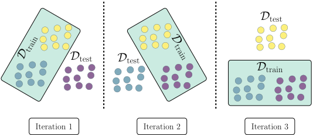
The "group" column role allows us to specify the column in the data that defines the group structure of the observations. In the following code, we construct a leave-one-out resampling strategy, assign the "group" role to the ‘year’ column of tsk("penguins"), instantiate the resampling strategy, and finally show how the years are nicely separated in the first fold.
rsmp_loo = rsmp("loo")
tsk_grp = tsk("penguins")
tsk_grp$set_col_roles("year", "group")
rsmp_loo$instantiate(tsk_grp)
table(tsk_grp$data(rows = rsmp_loo$train_set(1), cols = "year"))year
2007 2008
110 114 table(tsk_grp$data(rows = rsmp_loo$test_set(1), cols = "year"))year
2009
120 Other cross-validation techniques work in a similar way, where folds are determined at a group level (as opposed to an observation level).
Stratified Sampling
Stratified sampling ensures that one or more discrete features within the training and test sets will have a similar distribution as in the original task containing all observations. This is especially useful when a discrete feature is highly imbalanced and we want to make sure that the distribution of that feature is similar in each resampling iteration (Figure 3.7). We can also stratify on the target feature to ensure that each intermediate model is fit on training data where the class distribution of the target is representative of the actual task, this is useful to ensure target classes are not strongly under-represented by random chance in individual resampling iterations, which would lead to degenerate estimations of the generalization performance.
![The figure shows rectangles in yellow and green to represent the majority and minority class respectively. On the left side are rectangles corresponding to the task before it is split; the majority class (yellow) on the left is clearly larger than the minority class (green) on the right. This is labeled 'Imabalanced Class Distribution'. In the next three boxes, labeled 'Iteration 1-3' respectively, the size difference between the majority and minority classes is preserved, i.e., the difference in size between majority and minority classes are equal.](Figures/mlr3book_figures-8.svg)
Unlike grouping, it is possible to stratify by multiple discrete features using the "stratum" column role (Section 2.6). In this case, strata would be formed out of each combination of the stratified features, e.g., for two stratified features A and B with levels Aa, Ab; Ba, Bb respectively then the created stratum would have the levels AaBa, AaBb, AbBa, AbBb.
tsk("penguins") displays imbalance in the species column, as can be seen in the output below:
prop.table(table(tsk_penguins$data(cols = "species")))species
Adelie Chinstrap Gentoo
0.4419 0.1977 0.3605 Without specifying a "stratum" column role, the species column may have quite different class distributions across the CV folds, as can be seen in the example below.
rsmp_cv10 = rsmp("cv", folds = 10)
rsmp_cv10$instantiate(tsk_penguins)
fold1 = prop.table(table(tsk_penguins$data(rows = rsmp_cv10$test_set(1),
cols = "species")))
fold2 = prop.table(table(tsk_penguins$data(rows = rsmp_cv10$test_set(2),
cols = "species")))
rbind("Fold 1" = fold1, "Fold 2" = fold2) Adelie Chinstrap Gentoo
Fold 1 0.6286 0.1143 0.2571
Fold 2 0.5143 0.1714 0.3143We can see across folds how Chinstrap is represented quite differently (0.11 vs. 0.17)
When imbalance is severe, minority classes might not occur in the training sets entirely. Consequently, the intermediate models within these resampling iterations will never predict the missing class, resulting in a misleading performance estimate for any resampling strategy without stratification. The code below uses species as "stratum" column role to illustrate that the distribution of species in each test set will closely match the original distribution:
tsk_str = tsk("penguins")
# set species to have both the 'target' and 'stratum' column role
tsk_str$set_col_roles("species", c("target", "stratum"))
rsmp_cv10$instantiate(tsk_str)
fold1 = prop.table(table(tsk_str$data(rows = rsmp_cv10$test_set(1),
cols = "species")))
fold2 = prop.table(table(tsk_str$data(rows = rsmp_cv10$test_set(2),
cols = "species")))
rbind("Fold 1" = fold1, "Fold 2" = fold2) Adelie Chinstrap Gentoo
Fold 1 0.4444 0.1944 0.3611
Fold 2 0.4444 0.1944 0.3611You can view the observations that fall into each stratum using the $strata field of a Task object, this can be particularly useful when we are interested in multiple strata:
tsk_str$set_col_roles("year", "stratum")
tsk_str$strata N row_id
1: 50 1,2,3,4,5,6,...[50]
2: 50 51,52,53,54,55,56,...[50]
3: 52 101,102,103,104,105,106,...[52]
4: 34 153,154,155,156,157,158,...[34]
5: 46 187,188,189,190,191,192,...[46]
6: 44 233,234,235,236,237,238,...[44]
7: 26 277,278,279,280,281,282,...[26]
8: 18 303,304,305,306,307,308,...[18]
9: 24 321,322,323,324,325,326,...[24] year
species 2007 2008 2009
Adelie 50 50 52
Chinstrap 26 18 24
Gentoo 34 46 443.3 Benchmarking
Benchmarking in supervised machine learning refers to the comparison of different learners on one or more tasks. When comparing multiple learners on a single task or on a domain consisting of multiple similar tasks, the main aim is often to rank the learners according to a pre-defined performance measure and to identify the best-performing learner for the considered task or domain. When comparing multiple learners on multiple tasks, the main aim is often more of a scientific nature, e.g., to gain insights into how different learners perform in different data situations or whether there are certain data properties that heavily affect the performance of certain learners (or certain hyperparameters of learners). It is common (and good) practice for algorithm designers to analyze the generalization performance or runtime of a newly proposed learning algorithm in comparison to existing learners in a benchmark experiment. Since benchmarks usually consist of many evaluations that can be run independently of each other, mlr3 offers the possibility of parallelizing them automatically, which we demonstrate in Section 10.1.2. In this section, we will focus on the basic setup of benchmark experiments that will be applicable in the majority of use cases, in Chapter 11 we will look at more complex, large-scale, benchmark experiments.
3.3.1 benchmark()
Benchmark experiments in mlr3 are conducted with benchmark(), which simply runs resample() on each task and learner separately, then collects the results. The provided resampling strategy is automatically instantiated on each task to ensure that all learners are compared against the same training and test data.
To use the benchmark() function we first call benchmark_grid(), which constructs an exhaustive design to describe all combinations of the learners, tasks and resamplings to be used in a benchmark experiment, and instantiates the resampling strategies. By example, below we set up a design to see if a random forest, decision tree, or featureless baseline (Section 2.2.4), performs best across two classification tasks.
tasks = tsks(c("german_credit", "sonar"))
learners = lrns(c("classif.rpart", "classif.ranger",
"classif.featureless"), predict_type = "prob")
rsmp_cv5 = rsmp("cv", folds = 5)
design = benchmark_grid(tasks, learners, rsmp_cv5)
head(design) task learner resampling
1: german_credit classif.rpart cv
2: german_credit classif.ranger cv
3: german_credit classif.featureless cv
4: sonar classif.rpart cv
5: sonar classif.ranger cv
6: sonar classif.featureless cvThe resulting design is essentially just a data.table, which can be modified if you want to remove particular combinations or could even be created from scratch without the benchmark_grid() function. Note that this data.table has list columns that contain R6 objects of tasks, learners, and resampling instances.
Reproducibility When Using
benchmark_grid()
By default, benchmark_grid() instantiates the resamplings on the tasks, which means that concrete train-test splits are generated. Since this process is stochastic, it is necessary to set a seed before calling benchmark_grid() to ensure reproducibility of the data splits.
The constructed benchmark design can then be passed to benchmark() to run the experiment and the result is a BenchmarkResult object:
bmr = benchmark(design)
bmr
── <BenchmarkResult> of 30 rows with 6 resampling run ───────────────────
nr task_id learner_id resampling_id iters warnings
1 german_credit classif.rpart cv 5 0
2 german_credit classif.ranger cv 5 0
3 german_credit classif.featureless cv 5 0
4 sonar classif.rpart cv 5 0
5 sonar classif.ranger cv 5 0
6 sonar classif.featureless cv 5 0
1 variable not shown: [errors]As benchmark() is just an extension of resample(), we can once again use $score(), or $aggregate() depending on your use-case, though note that in this case $score() will return results over each fold of each learner/task/resampling combination.
bmr$score()[c(1, 7, 13), .(iteration, task_id, learner_id, classif.ce)] iteration task_id learner_id classif.ce
1: 1 german_credit classif.rpart 0.245
2: 2 german_credit classif.ranger 0.170
3: 3 german_credit classif.featureless 0.315bmr$aggregate()[, .(task_id, learner_id, classif.ce)] task_id learner_id classif.ce
1: german_credit classif.rpart 0.2620
2: german_credit classif.ranger 0.2220
3: german_credit classif.featureless 0.3000
4: sonar classif.rpart 0.3365
5: sonar classif.ranger 0.1871
6: sonar classif.featureless 0.5388This would conclude a basic benchmark experiment where you can draw tentative conclusions about model performance, in this case we would possibly conclude that the random forest is the best of all three models on each task. We draw conclusions cautiously here as we have not run any statistical tests or included standard errors of measures, so we cannot definitively say if one model outperforms the other.
As the results of $score() and $aggregate() are returned in a data.table, you can post-process and analyze the results in any way you want. A common mistake is to average the learner performance across all tasks when the tasks vary significantly. This is a mistake as averaging the performance will miss out important insights into how learners compare on ‘easier’ or more ‘difficult’ predictive problems. A more robust alternative to compare the overall algorithm performance across multiple tasks is to compute the ranks of each learner on each task separately and then calculate the average ranks. This can provide a better comparison as task-specific ‘quirks’ are taken into account by comparing learners within tasks before comparing them across tasks. However, using ranks will lose information about the numerical differences between the calculated performance scores. Analysis of benchmark experiments, including statistical tests, is covered in more detail in Section 11.3.
3.3.2 BenchmarkResult Objects
A BenchmarkResult object is a collection of multiple ResampleResult objects.
bmrdt = as.data.table(bmr)
bmrdt[1:2, .(task, learner, resampling, iteration)] task learner
1: <TaskClassif:german_credit> <LearnerClassifRpart:classif.rpart>
2: <TaskClassif:german_credit> <LearnerClassifRpart:classif.rpart>
2 variables not shown: [resampling, iteration]The contents of a BenchmarkResult and ResampleResult (Section 3.2.4) are almost identical and the stored ResampleResults can be extracted via the $resample_result(i) method, where i is the index of the performed resample experiment. This allows us to investigate the extracted ResampleResult and individual resampling iterations as shown in Section 3.2, as well as the predictions from each fold with $resample_result(i)$predictions().
rr1 = bmr$resample_result(1)
rr1
── <ResampleResult> with 5 resampling iterations ────────────────────────
task_id learner_id resampling_id iteration prediction_test
german_credit classif.rpart cv 1 <PredictionClassif>
german_credit classif.rpart cv 2 <PredictionClassif>
german_credit classif.rpart cv 3 <PredictionClassif>
german_credit classif.rpart cv 4 <PredictionClassif>
german_credit classif.rpart cv 5 <PredictionClassif>
2 variables not shown: [warnings, errors]rr2 = bmr$resample_result(2)In addition, as_benchmark_result() can be used to convert objects from ResampleResult to BenchmarkResult. The c()-method can be used to combine multiple BenchmarkResult objects, which can be useful when conducting experiments across multiple machines:
bmr1 = as_benchmark_result(rr1)
bmr2 = as_benchmark_result(rr2)
c(bmr1, bmr2)
── <BenchmarkResult> of 10 rows with 2 resampling run ───────────────────
nr task_id learner_id resampling_id iters warnings errors
1 german_credit classif.rpart cv 5 0 0
2 german_credit classif.ranger cv 5 0 0Boxplots are most commonly used to visualize benchmark experiments as they can intuitively summarize results across tasks and learners simultaneously.
autoplot(bmr, measure = msr("classif.acc"))
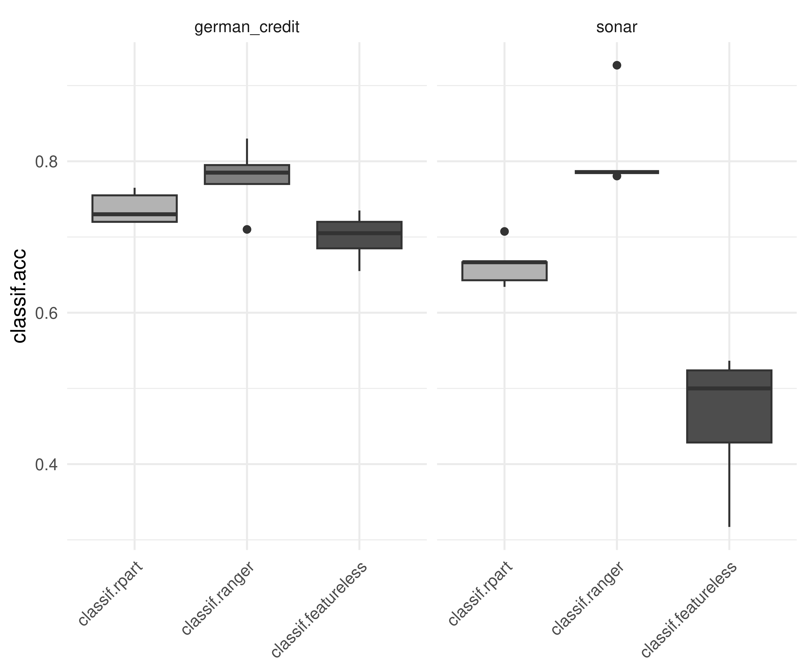
lrn("classif.ranger")) consistently outperforms the other learners.
It is also possible to plot confidence intervals by setting the type of plot to "ci".
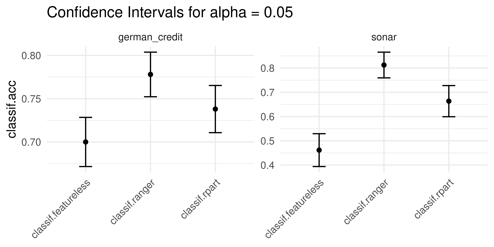
lrn("classif.ranger")) consistently outperforms the other learners.
3.4 Evaluation of Binary Classifiers
In Section 2.5.3 we touched on the concept of a confusion matrix and how it can be used to break down classification errors in more detail. In this section, we will look at specialized performance measures for binary classification in more detail. We will first return to the confusion matrix and discuss measures that can be derived from it and then will look at ROC analysis which builds on these measures. See Chapters 7 and 8 of Provost and Fawcett (2013) for a more detailed introduction to ROC measures.
3.4.1 Confusion Matrix
To recap, a confusion matrix summarizes the following quantities in a two-dimensional contingency table (see also Figure 3.10):
- True positives (TPs): Positive instances that are correctly classified as positive.
- True negatives (TNs): Negative instances that are correctly classified as negative.
- False positives (FPs): Negative instances that are incorrectly classified as positive.
- False negatives (FNs): Positive instances that are incorrectly classified as negative.
Different applications may have a particular interest in one (or multiple) of the aforementioned quantities. For example, the tsk("spam") classification task is concerned with classifying if mail is spam (positive class) or not (negative class). In this case, we are likely to accept FNs (some spam classified as genuine mail) as long as we have a low number of FPs (genuine and possibly important mail classified as spam). In another example, say we are predicting if a travel bag contains a weapon (positive class) or not (negative class) at an airport. This classifier must have a very high number of TPs (as FNs are not acceptable at all), even if this comes at the expense of more FPs (false alarms).
As we saw in Section 2.5.3, it is possible for a classifier to have a good classification accuracy but to overlook the nuances provided by a full confusion matrix, as in the following tsk("german_credit") example:
tsk_german = tsk("german_credit")
lrn_ranger = lrn("classif.ranger", predict_type = "prob")
splits = partition(tsk_german, ratio = 0.8)
lrn_ranger$train(tsk_german, splits$train)
prediction = lrn_ranger$predict(tsk_german, splits$test)
prediction$score(msr("classif.acc"))classif.acc
0.795 prediction$confusion truth
response good bad
good 131 34
bad 7 28The classification accuracy only takes into account the TPs and TNs, whereas the confusion matrix provides a more holistic picture of the classifier’s performance.
On their own, the absolute numbers in a confusion matrix can be less useful when there is class imbalance. Instead, several normalized measures can be derived (Figure 3.10):
- True Positive Rate (TPR), Sensitivity or Recall: How many of the true positives did we predict as positive?
- True Negative Rate (TNR) or Specificity: How many of the true negatives did we predict as negative?
- False Positive Rate (FPR), or \(1 -\) Specificity: How many of the true negatives did we predict as positive?
- Positive Predictive Value (PPV) or Precision: If we predict positive how likely is it a true positive?
- Negative Predictive Value (NPV): If we predict negative how likely is it a true negative?
- Accuracy (ACC): The proportion of correctly classified instances out of the total number of instances.
- F1-score: The harmonic mean of precision and recall, which balances the trade-off between precision and recall. It is calculated as \(2 \times \frac{Precision \times Recall}{Precision + Recall}\).
The mlr3measures package allows you to compute several common confusion matrix-based measures using the confusion_matrix() function:
mlr3measures::confusion_matrix(truth = prediction$truth,
response = prediction$response, positive = tsk_german$positive) truth
response good bad
good 131 34
bad 7 28
acc : 0.7950; ce : 0.2050; dor : 15.4118; f1 : 0.8647
fdr : 0.2061; fnr : 0.0507; fomr: 0.2000; fpr : 0.5484
mcc : 0.4880; npv : 0.8000; ppv : 0.7939; tnr : 0.4516
tpr : 0.9493 We now have a better idea of the random forest predictions on tsk("german_credit"), in particular, the false positive rate is quite high. It is generally difficult to achieve a high TPR and low FPR simultaneously because there is often a trade-off between the two rates. When a binary classifier predicts probabilities instead of discrete classes (predict_type = "prob"), we could set a threshold to cut off the probabilities to change how we assign observations to the positive/negative class (see Section 2.5.4). Increasing the threshold for identifying the positive cases, leads to a higher number of negative predictions, fewer positive predictions, and therefore a lower (and better) FPR but a lower (and worse) TPR – the reverse holds if we lower the threshold. Instead of arbitrarily changing a threshold to ‘game’ these two numbers, a more robust way to tradeoff between TPR and FPR is to use ROC analysis, discussed next.
3.4.2 ROC Analysis
ROC (Receiver Operating Characteristic) analysis is widely used to evaluate binary classifiers by visualizing the trade-off between the TPR and the FPR.
The ROC curve is a line graph with TPR on the y-axis and the FPR on the x-axis. To understand the usefulness of this curve, first consider the simple case of a hard labeling classifier (predict_type = "response") that classifies observations as either positive or negative. This classifier would be represented as a single point in the ROC space (see Figure 3.11, panel (a)). The best classifier would lie on the top-left corner where the TPR is \(1\) and the FPR is \(0\). Classifiers on the diagonal predict class labels randomly (with different class proportions). For example, if each positive instance will be randomly classified (ignoring features) with 25% as the positive class, we would obtain a TPR of 0.25. If we assign each negative instance randomly to the positive class, we would have an FPR of 0.25. In practice, we should never obtain a classifier below the diagonal and a point in the ROC space below the diagonal might indicate that the positive and negative class labels have been switched by the classifier.
Warning in geom_text(aes(x = 0.5, y = 0.5, hjust = 0.5, vjust = -0.5, label = "random classifiers"), : All aesthetics have length 1, but the data has 2 rows.
ℹ Please consider using `annotate()` or provide this layer with data
containing a single row.Warning in geom_text(aes(x = 0.5, y = 0.5, hjust = 0.5, vjust = -0.5, label = "baseline"), : All aesthetics have length 1, but the data has 2 rows.
ℹ Please consider using `annotate()` or provide this layer with data
containing a single row.![Two plots labeled (a) and (b). Both have 'FPR' between 0-1 on x-axis and 'TPR' between 0-1 on y-axis, both also have a diagonal line y=x with text 'baseline (random classifiers)'. (a): There is a green dot in upper left corner at (0,1). There is a triangle labeled C1 at around (0.1,0.75), a square labeled C2 at around (0.24, 0.75), and a plus labeled C3 at around (0.25, 0.8). (b) is same as (a) except now there are three dashed lines such that each of the points from (a) lies on one of these lines. The lines roughly curve from (0,0) towards (0,1) and then to (1,1)](evaluation_and_benchmarking_files/figure-html/fig-roc-1.png)
Now consider classifiers that predict probabilities instead of discrete classes. Using different thresholds to cut off predicted probabilities and assign them to the positive and negative class will lead to different TPRs and FPRs and by plotting these values across different thresholds we can characterize the behavior of a binary classifier – this is the ROC curve. For example, we can use the previous Prediction object to compute all possible TPR and FPR combinations by thresholding the predicted probabilities across all possible thresholds, which is exactly what mlr3viz::autoplot.PredictionClassif will do when type = "roc" is selected:
autoplot(prediction, type = "roc")
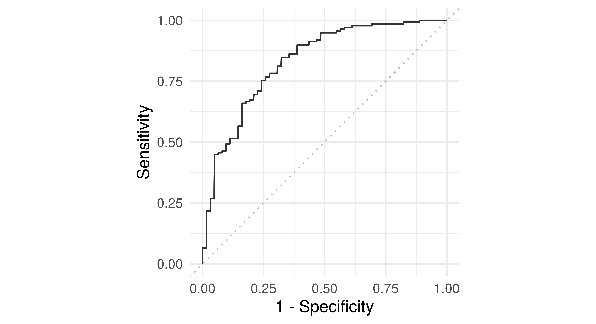
german_credit dataset and the classif.ranger random forest learner. Recall FPR = \(1 -\) Specificity and TPR = Sensitivity.
A natural performance measure that can be derived from the ROC curve is the area under the curve (AUC), implemented in msr("classif.auc"). The AUC can be interpreted as the probability that a randomly chosen positive instance has a higher predicted probability of belonging to the positive class than a randomly chosen negative instance. Therefore, higher values (closer to \(1\)) indicate better performance. Random classifiers (such as the featureless baseline) will always have an AUC of (approximately, when evaluated empirically) 0.5 (see Figure 3.11, panel (b)).
area under the curve
prediction$score(msr("classif.auc"))classif.auc
0.8319 Evaluating our random forest on tsk("german_credit") results in an AUC of around 0.83, which is acceptable but could be better.
Multiclass ROC and AUC
Extensions of ROC analysis for multiclass classifiers exist (see e.g., Hand and Till 2001) but we only cover the more common binary classification case in this book. Generalizations of the AUC measure to multiclass classification are implemented in mlr3, see msr("classif.mauc_au1p").
We can also plot the precision-recall curve (PRC) which visualizes the PPV/precision vs. TPR/recall. The main difference between ROC curves and PR curves is that the number of true-negatives are ignored in the latter. This can be useful in imbalanced populations where the positive class is rare, and where a classifier with high TPR may still not be very informative and have low PPV. See Davis and Goadrich (2006) for a detailed discussion about the relationship between the PRC and ROC curves.
Precision-recall Curve
autoplot(prediction, type = "prc")
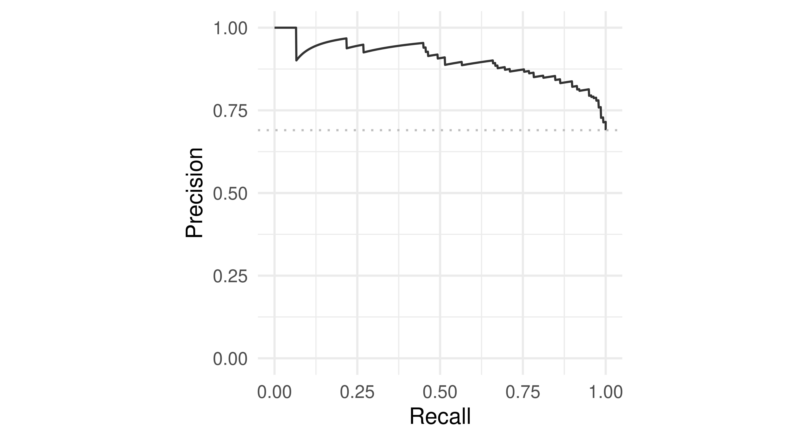
tsk("german_credit") and lrn("classif.ranger").
Another useful way to think about the performance of a classifier is to visualize the relationship of a performance metric over varying thresholds, for example, see Figure 3.14 to inspect the FPR and accuracy across all possible thresholds:
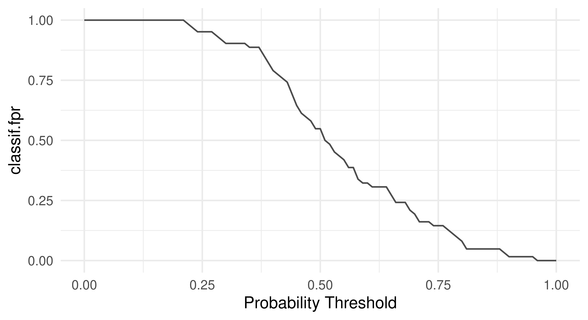
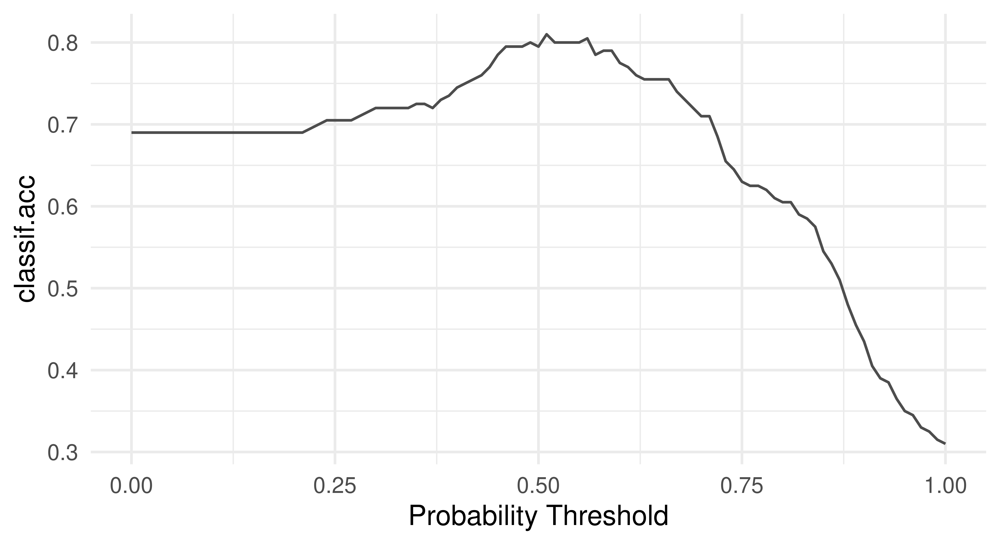
tsk("german_credit").
This visualization would show us that changing the threshold from the default 0.5 to a higher value like 0.7 would greatly reduce the FPR while reducing accuracy by only a few percentage points. Depending on the problem at hand, this might be a perfectly desirable trade-off.
These visualizations are also available for ResampleResult objects. In this case, the predictions of individual resampling iterations are merged before calculating a ROC or PR curve (micro averaged):
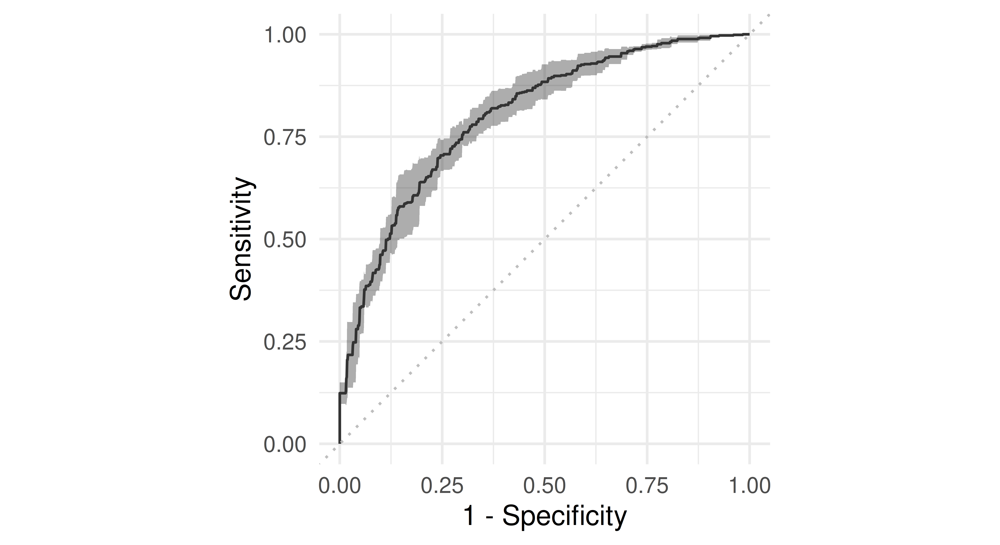
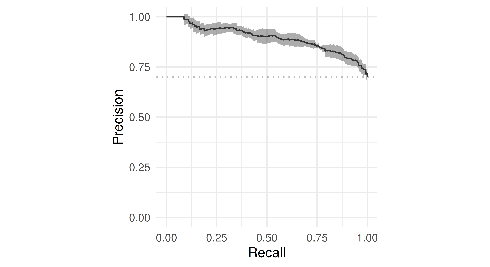
tsk("german_credit").
Finally, we can visualize ROC/PR curves for a BenchmarkResult to compare multiple learners on the same Task:
library(patchwork)
design = benchmark_grid(
tasks = tsk("german_credit"),
learners = lrns(c("classif.rpart", "classif.ranger"),
predict_type = "prob"),
resamplings = rsmp("cv", folds = 5)
)
bmr = benchmark(design)
autoplot(bmr, type = "roc") + autoplot(bmr, type = "prc") +
plot_layout(guides = "collect")
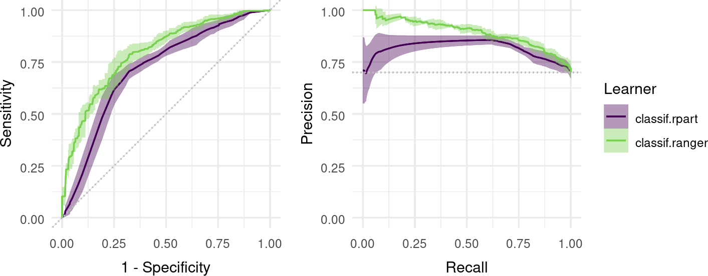
3.5 Conclusion
In this chapter, we learned how to estimate the generalization performance of a model via resampling strategies, from holdout to cross-validation and bootstrap, and how to automate the comparison of multiple learners in benchmark experiments. We also covered the basics of performance measures for binary classification, including the confusion matrix, ROC analysis, and precision-recall curves. These topics are fundamental in supervised learning and will continue to be built upon throughout this book. In particular, Chapter 4 utilizes evaluation in automated model tuning to improve performance, in Chapter 11 we look at large benchmarks and their statistical analysis, and in Chapter 13 we will take a look at specialized tasks that require different resampling strategies.
| Class | Constructor/Function | Fields/Methods |
|---|---|---|
PredictionClassif |
classif_lrn$predict() |
confusion_matrix(); autoplot(some_prediction_classif, type = "roc")
|
| - | partition() |
- |
Resampling |
rsmp() |
$instantiate() |
ResampleResult |
resample() |
$score(); $aggregate(); $predictions(); as_benchmark_result(); autoplot(some_resample_result, type = "roc")
|
| - | benchmark_grid() |
- |
BenchmarkResult |
benchmark() |
$aggregate(); $resample_result(); $score(); autoplot(some_benchmark_result, type = "roc")
|
3.6 Exercises
Apply a repeated cross-validation resampling strategy on
tsk("mtcars")and evaluate the performance oflrn("regr.rpart"). Use five repeats of three folds each. Calculate the MSE for each iteration and visualize the result. Finally, calculate the aggregated performance score.Use
tsk("spam")and five-fold CV to benchmarklrn("classif.ranger"),lrn("classif.log_reg"), andlrn("classif.xgboost", nrounds = 100)with respect to AUC. Which learner appears to perform best? How confident are you in your conclusion? Think about the stability of results and investigate this by re-rerunning the experiment with different seeds. What can be done to improve this?A colleague reports a 93.1% classification accuracy using
lrn("classif.rpart")ontsk("penguins_simple"). You want to reproduce their results and ask them about their resampling strategy. They said they used a custom three-fold CV with folds assigned asfactor(task$row_ids %% 3). See if you can reproduce their results.(*) Program your own ROC plotting function without using
mlr3’sautoplot()function. The signature of your function should bemy_roc_plot(task, learner, train_indices, test_indices). Your function should use the$set_threshold()method ofPrediction, as well asmlr3measures.
3.7 Citation
Please cite this chapter as:
Casalicchio G, Burk L, Fischer S. (2024). Evaluation and Benchmarking. In Bischl B, Sonabend R, Kotthoff L, Lang M, (Eds.), Applied Machine Learning Using mlr3 in R. CRC Press. https://mlr3book.mlr-org.com/evaluation_and_benchmarking.html.
@incollection{citekey,
author = "Giuseppe Casalicchio and Lukas Burk and Sebastian Fischer",
title = "Evaluation and Benchmarking",
booktitle = "Applied Machine Learning Using {m}lr3 in {R}",
publisher = "CRC Press", year = "2024",
editor = "Bernd Bischl and Raphael Sonabend and Lars Kotthoff and Michel Lang",
url = "https://mlr3book.mlr-org.com/evaluation_and_benchmarking.html"
}